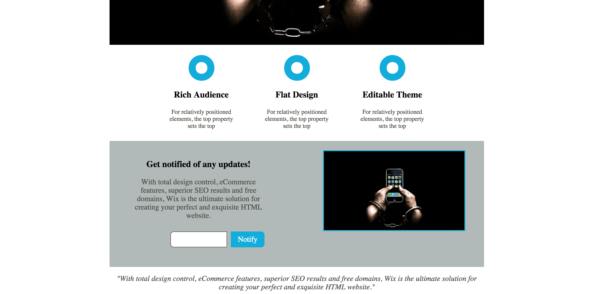
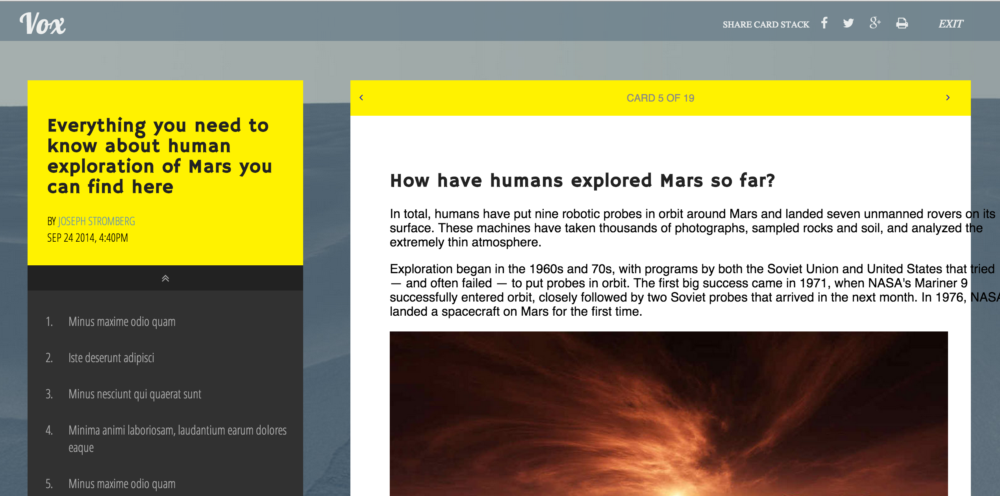
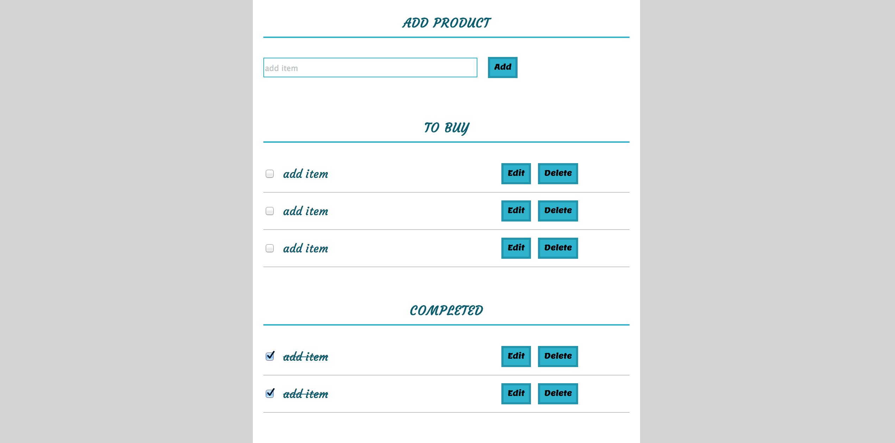
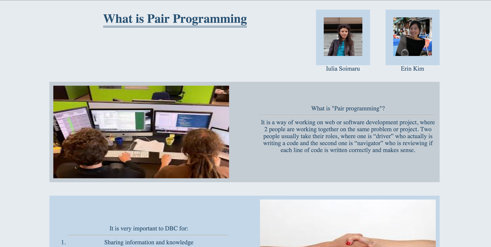
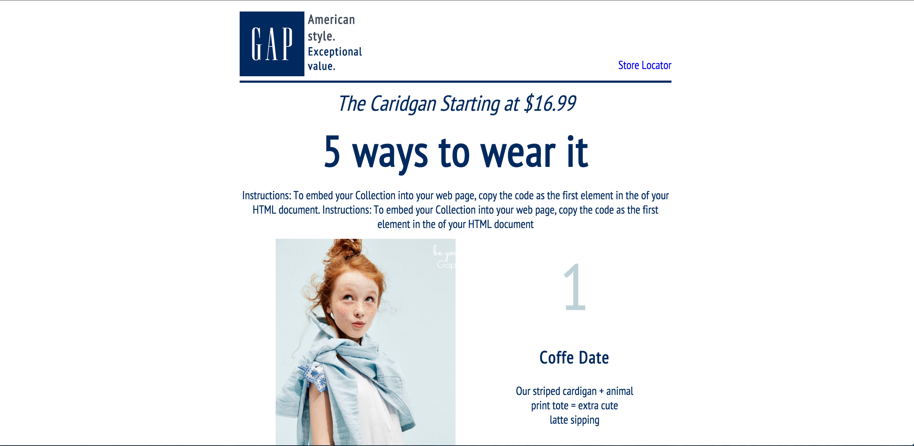

Practicing my HTML and CSS skills, I have made a clone of one webpage. I applied my new CSS skills in positioning, floats, hover elements and inputs.Practicing Grid CSS framework, I've made clone of blog site. I tried to work with overflow, font-awesome web-icons, links and positioning.Practicing my jQuery knowledges, I've made a shopping list where you can add new items, check completed, edit existing items and delete them.Working on website using technique "pair programming" with limited period of time. Practicing CSS styles with attention on floats and position of elements.Working on website using technique "pair programming" with limited period of time. Practicing CSS styles with attention on floats and position of elements.Working on website using technique "pair programming" with limited period of time. Practicing CSS styles with attention on floats and position of elements.